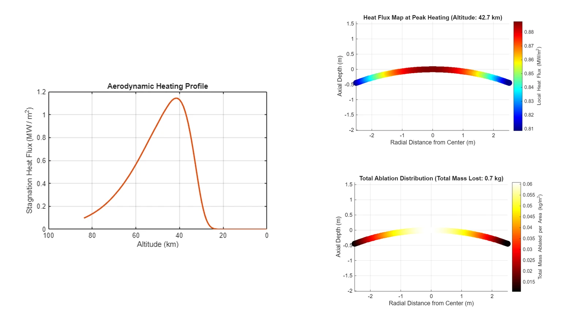
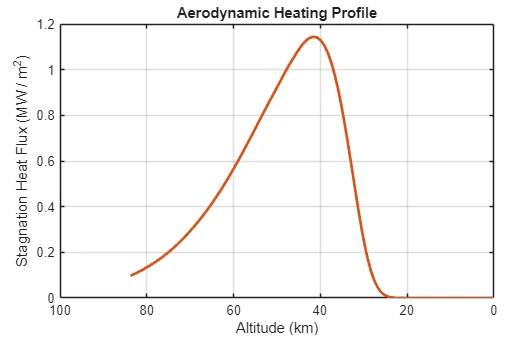
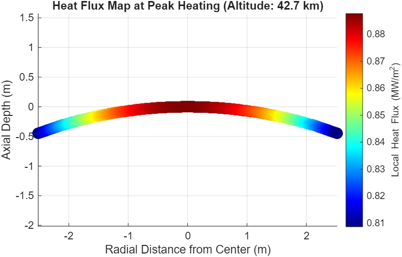
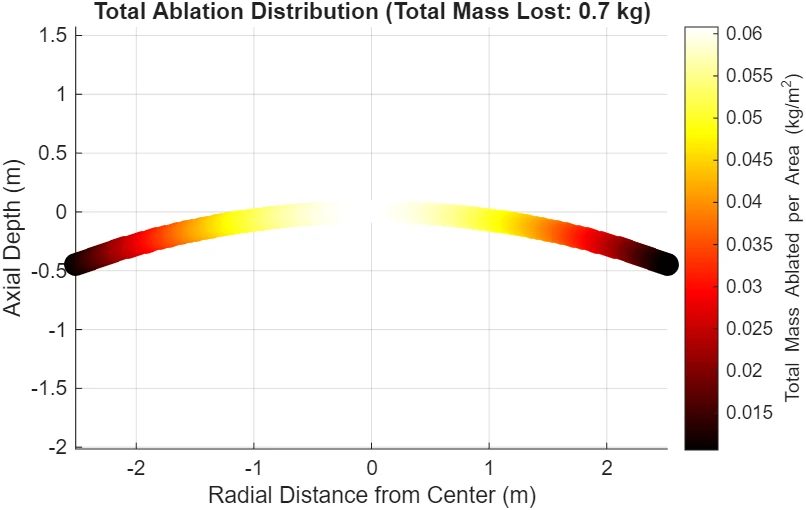

Spacecraft re-entry thermal model
A simplified re-entry model connecting atmospheric conditions, ballistic descent, stagnation-point heating, heat-flux distribution, surface radiation, and ablative mass loss.

Model architecture
The project intentionally used a first-order model rather than full CFD. The analysis moved through five linked steps:
- Layered atmospheric temperature, pressure, and density versus altitude.
- A simplified unpowered planar re-entry trajectory.
- Sutton–Graves stagnation-point convective heating.
- Lee’s heat-transfer distribution across the curved heat shield.
- A surface energy balance that separated radiation from simplified ablative mass loss.
Heating behavior
The model captured the competition between increasing atmospheric density and decreasing vehicle speed during descent. Because the Sutton–Graves relation scales strongly with velocity, the heating profile peaks before the vehicle reaches the densest part of the atmosphere.
Ablation result
After accounting for outgoing radiation, the remaining positive net heat flux was converted into a simplified mass-loss rate using an effective heat of ablation. The model summed the mass loss across 100 small surface rings over the simulated trajectory.
Assumptions and limits
This was deliberately a simplified engineering model. Key assumptions included ballistic zero-lift entry, constant flight-path angle and ballistic coefficient, constant material properties, a flat non-rotating Earth approximation, quasi-steady ablation, and no conduction term into the spacecraft structure.
Those limitations are important: the model is best read as a first-order way to understand the coupling between trajectory and thermal protection rather than as a flight-qualified prediction.
Visuals
Selected CAD, test data, and simulation outputs from the project.



More engineering work
Return to the main portfolio for mechanical design, controls, thermal-fluid modeling, and manufacturing projects.